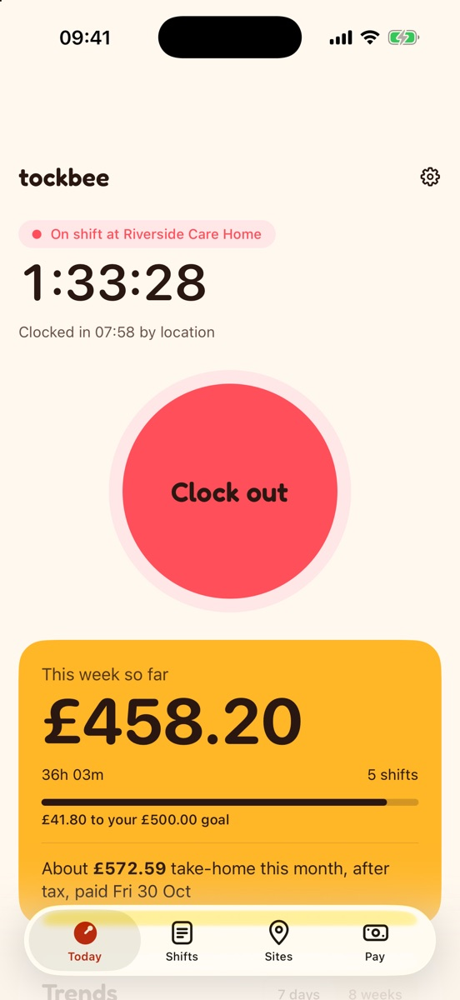
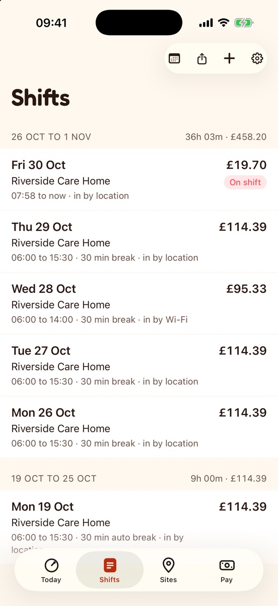

Your record
Your timesheet, ready to share
A PDF or CSV with every shift and how it was recorded. Choose what goes in, then share it with your manager, keep it, or print it.
Your shift, itemised
Every shift, how it was recorded and what it should pay, laid out like a receipt you can check against your payslip.
- Timesheet packA PDF with every shift, how it was recorded and a record check, with a letter template and Acas guidance.
- CSV exportFor spreadsheets.
Data not collected
Everything stays on your phone
No account, no ads, no tracking. Tockbee doesn’t have a server to send your hours to.
Tockbee, screen by screen
Real screens from the app. Today, Shifts, Pay, Payslip check and Export.

Today
The running shift, the timer and the Clock button.

Shifts
Times, breaks and how each shift was recorded.

Pay
Gross, overtime and estimated take-home.

Payslip check
What your payslip says against what you logged.
Questions about Tockbee
More answers on the support page, or write to hello@dotxline.com.
Do I need an account?
No. Open Tockbee and start. There is nothing to sign up for.
Why does Tockbee ask for location “Always”?
Only to notice when you arrive at or leave a work site you created, so it can clock you in and out. There is no continuous tracking and your location never leaves your phone. You can use work Wi-Fi or the Clock button instead.
Are the tax figures exact?
No. Take-home is an estimate after tax, National Insurance, student loan and pension. Your payslip is the official figure.
Where is my data?
In the app’s own storage on your phone. Backups go only to a folder you pick, such as your own iCloud Drive.